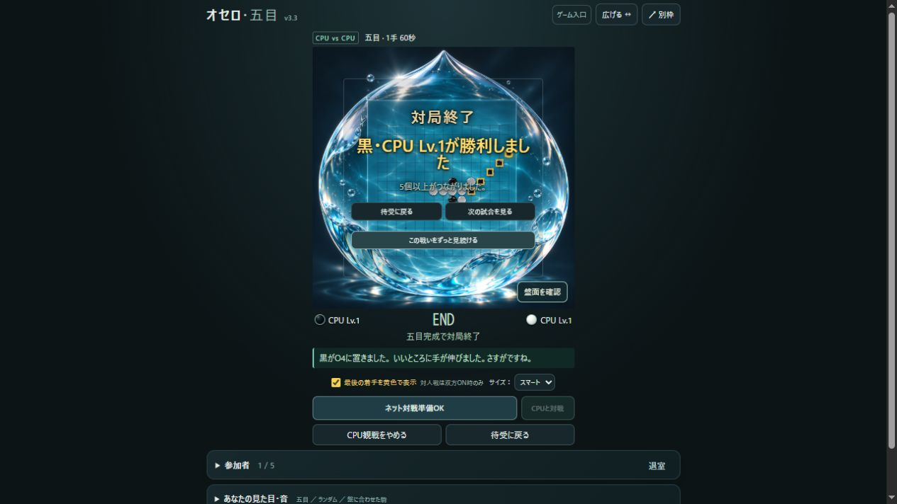
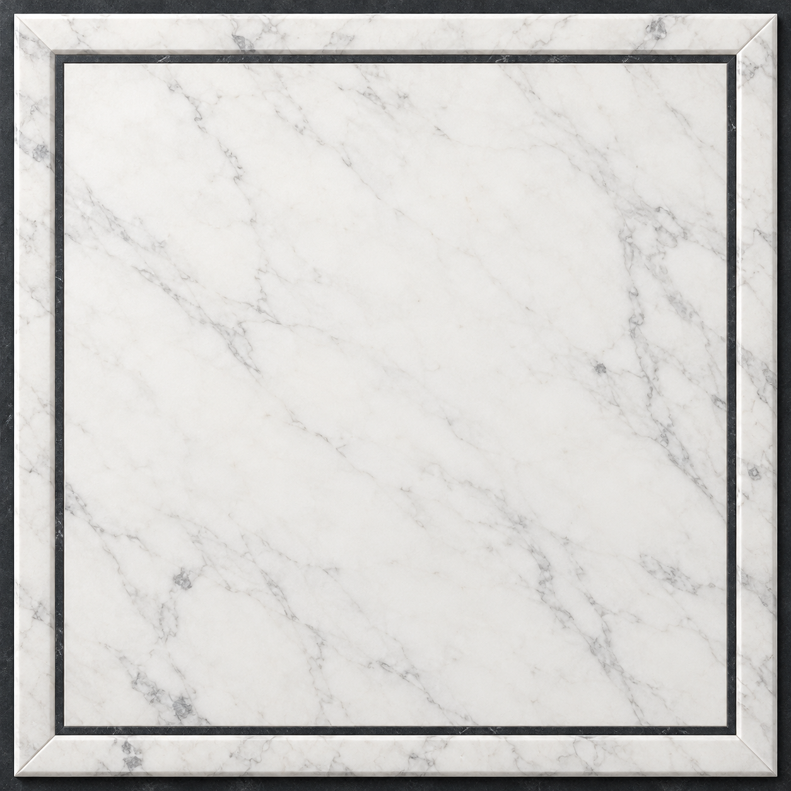
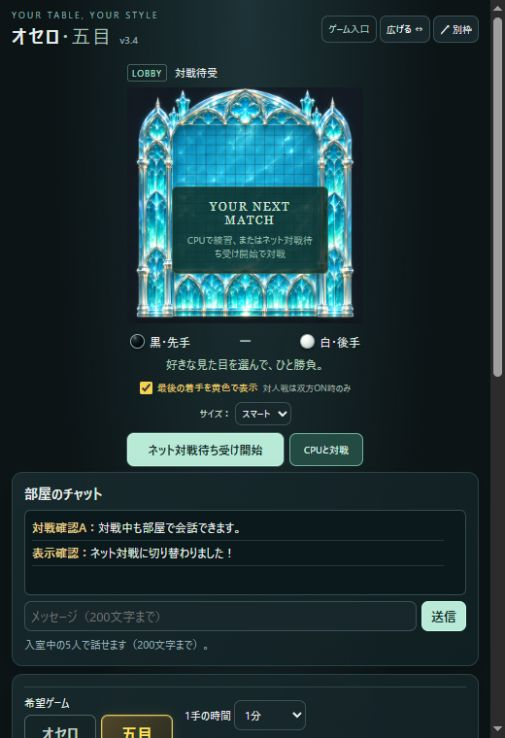

相手はLv.1〜10。
希望ゲームを選び、「あなたの対戦相手」の数字で難易度を決めて「CPUと対戦」。盤面下の同じボタンからも始められます。黒・白は開始時に決定します。「待った」はCPU戦で利用でき、オセロCPU戦では置ける場所の「・」もONにできます。
終了後は「再戦をする」、途中なら「CPU戦をやめる」で待受へ。負けを認めるときの「降参する」には、石が飛び散る演出もあります。
YOUR TABLE, YOUR STYLE
CPUと勝負する。CPU同士を眺める。
お気に入りの盤と音で、一局を楽しもう。
このページは盤のルールではなく、部屋の使い方をご案内します。
ゲームから開いた場合、元のタブのCPU戦や観戦は続いています。

01 / CPU DEMO
このPages試遊はCPU専用です。名前を入力して「プレイ画面へ」へ進み、希望ゲームのオセロ/五目と1手の時間を選んでください。名前は表示用で、どこかのサーバーへの入室ではありません。
02 / WARM UP & WATCH
練習する。見守る。そのまま流して眺める。部屋での過ごし方も自由です。
希望ゲームを選び、「あなたの対戦相手」の数字で難易度を決めて「CPUと対戦」。盤面下の同じボタンからも始められます。黒・白は開始時に決定します。「待った」はCPU戦で利用でき、オセロCPU戦では置ける場所の「・」もONにできます。
終了後は「再戦をする」、途中なら「CPU戦をやめる」で待受へ。負けを認めるときの「降参する」には、石が飛び散る演出もあります。
「観戦」の左右の難易度を別々に選び、「CPU同士」を押すと対戦を眺められます。結果から「次の試合を見る」で次戦へ進めます。オセロと五目、どちらでも観戦できます。
CPU観戦中にも次の希望ゲームを選び、CPUとの対戦へ切り替えられます。

CPU同士の結果で押すと次戦へ。以後は試合終了から6秒後に自動で次の試合が始まります。同じ難易度の組合せを引き継ぎ、ランダム背景なら毎試合違う盤へ切り替わります。
結果の「連続観戦中・あと○秒（停止）」で自動進行だけをOFFに。「連続観戦をやめる」なら待受へ戻れます。
03 / MAKE IT YOURS
勝負の仕組みは同じでも、見える世界はがらりと変わります。



プレイ画面で、対局前・対局後に設定できます。選んだゲームに合わせて設定内容が切り替わります。五目は92種類のスキンと、それぞれの世界に合う駒。木や大理石から、透明なガラス・宝石のような景色まで選べます。
オセロは20種類の背景、駒のスタイル、石の変化演出を選択。「演出一覧・使う演出」で、好みでない演出をOFFにすることもできます。着手欄には選ばれた演出名が出ます。
「？」のランダムを選ぶと、再戦や次の試合で直前と違う背景へ。固定で選べば、お気に入りの盤を使い続けられます。対局前に「五目」を押し直して、ランダム背景を見てみることもできます。
見た目・音は自分の画面だけの設定。相手のスキンや音を変えることはありません。背景スキンは保存しません。プレイ中は選んだスキンで遊べますが、名前の画面へ戻ったときや次に開いたときはオセロ・五目とも「？」のランダムへ戻ります。音や駒のスタイルなど、それ以外の設定は同じブラウザに保存し、「初期設定に戻す」で戻せます。対局中は見た目・音の変更をお休みします。

SOUND SELECTION
五目には63種類の録音・効果音と13カテゴリー。碁石の音、ビー玉、ガラス、木、金属、かわいいデジタルなどを「▶ 試聴」で聴き比べられます。
04 / STAY TOGETHER

別枠は縦長のスマート表示で開きます。「広げる ↔」で横長に、「縦長に戻す ↔」で元の形へ。元のページと別枠で二重に操作せず、操作する画面を引き継ぐ仕組みです。同じプレイを別枠へ移るときは、選んでいる背景も引き継ぎます。
盤面の「サイズ」で、スマート・標準・拡大・激拡大・爆拡大を選べます。大きい表示は縦スクロールも使い、ゆったり楽しみたいときに。スマートでは会話欄の場所も確保します。
自己設置版には5人共通チャット、ネット待受とCPU待機、「誰でも」の双方同意による最大2組の同時対局、参加者クリックの観戦切替があります。Pages試遊から自動接続する機能はありません。
背景スキンだけは保存せず、名前の画面へ戻ったときや次回表示時はランダムへ。音や駒のスタイルなどはブラウザに保存します。同じプレイを別枠へ引き継ぐ場合は背景も続きます。
このPages試遊にはありません。配布物のself-hostを自分のPC/NAS/サーバーへ設置して利用してください。作者の個人サーバーへの入口は用意していません。
五目は「盤面を確認」で結果の文字を隠せます。CPU同士の結果から連続観戦を始めることもできます。